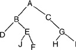
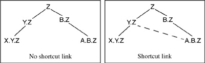

Networking Security Networking Security Networking Security Security Networking Security Networking Security Networking Charlie Kaufman Radia Perlman Mike Speciner Prentice Hall Network Security: Private Communication in a Public World, Second Edition
14.9. Hierarchy of Realms
In Kerberos V4, in order for principals in realm A to be authenticated by principals in realm B it was necessary for B's KDC to be registered as a principal in A's KDC. For full connectivity, this means that if there are n realms, the KDC in each realm has to be registered as a principal in each of the other n-1 realms. This is increasingly nightmarish as n gets large (see §9.7.4.1 Multiple KDC Domains).
In Kerberos V5, it is allowable to go through a series of realms in order to authenticate. For instance, a principal in realm A might wish to be authenticated by a principal in realm C. However, realm C might not be registered in A. But perhaps realm B is registered in A, and realm C is registered in B. A principal in A can get a ticket for something in C by first getting a ticket for B, and then asking B for a ticket to the KDC in C.
By allowing realm B to act as intermediary between realm C and other realms, we give the KDC at B the power to impersonate anyone in the world. Kerberos fixes this vulnerability somewhat by including in tickets a TRANSITED field which lists the names of all the realms that have been transited to obtain the ticket.
Why is the TRANSITED field useful? Suppose Woodward@Washington-Post.Com is contacted with a ticket that indicates the ticket was issued to the principal named Deep-Throat@WhiteHouse.gov, with the TRANSITED field indicating KGB.Russia. It is possible that Woodward should not assume the party using the ticket is really Mr. or Ms. Throat, since it would be in the interest of and the ability of the owner of the KGB realm's KDC to create a ticket that claims the source is anything. The KGB KDC can give such a ticket, along with the corresponding session key, to a confederate. Or the KDC can use the ticket and session key to impersonate the named source directly.
The only thing the KGB KDC cannot do is avoid being named inside the ticket, since a KDC will reject a ticket if the final entry in the TRANSITED field doesn't match the key with which the ticket is encrypted. If Alice gives Bob a ticket, Bob knows which KDC issued the ticket (it's the one with which he shares the key used to encrypt the ticket). But for all the other information in the ticket (like Alice's name and the other realms mentioned in the TRANSITED field), Bob has to trust the KDC which issued the ticket. And although the KDC which issued the ticket to Bob might be trustworthy, if there's any KDC in the path that isn't, all the earlier realms mentioned in the TRANSITED field and the original principal's name (Alice) are suspect.
The TRANSITED field in the ticket gives enough information for Bob (the service being accessed with the ticket) to know whether there are any realms on the path that Bob considers untrustworthy. A realm might be considered completely untrustworthy as a transit realm, but trustworthy when it claims to be acting on behalf of principals in its own realm. Each principal will have its own policy for which realms to trust.
You could say that by doing this, Kerberos is permitting maximum flexibility in possible policies. Or you could say that Kerberos is abdicating responsibility for this crucial decision by throwing it to the whim of application developers who will almost certainly get it wrong.

Either way, some sort of policy is necessary. One such policyÂand a likely one at thatÂis to arrange realms into a tree such that each realm shares a key with each of its children and with its parent. The set of realms trusted for any authentication is the shortest path through the tree, i.e., the path that gets no closer to the root than the common ancestor lowest in the tree.
For example, in the above diagram, realm G shares a key with its parent realm (C) and each of its children (H and I). To get from realm I to realm H, you'd go through G. To get from realm F to realm D, you'd go through the lowest common ancestor (B), and to get there you'd have to go through E, so the path would be FÂEÂBÂD.
It's especially convenient if the path of realms can be identified solely on the basis of the syntax of names. If realm names were just unstructured strings, it would be difficult to find a path. Luckily realm names in all current implementations of Kerberos are hierarchical, since they follow either Internet or X.500 naming. For instance, assume Cat@Hat.Com wishes to access Dennis@Menace.Com. Cat@Hat.Com resides in realm Hat.Com. Dennis@Menace.Com resides in Menace.Com. The next level of hierarchy is simply called Com. If we create a realm named Com that shares a key with all realms with names of the form x.Com, it can then serve as an authentication intermediary. In general, to get from one realm to another, one travels upward to a common ancestor, and then downward to the destination realm.
It is likely that some administrative entity exists which would be a likely CA operator for the Com realm, because some such entity must ensure that there are no name collisions in the .Com space.
Sometimes it might be desirable to shortcut the hierarchy. This might be for efficiency reasons (so authentication between two realms distant in the naming hierarchy does not need to be done via a long sequence of KDCs), or for trust reasons (there might be KDCs along the naming hierarchy path that the two realms would prefer not to have to trust).

It is possible to have links between KDCs that wouldn't ordinarily be linked based on the naming hierarchy. Such links are usually called cross-links. A safe rule with cross-links is that when traversing the naming hierarchy to get to the target, cross-links should always be used if they make the path shorter, because it means fewer KDCs need to be trusted.
There are two issues with realm paths. One is how the initiator finds a realm path to the target. As we've shown, if names are hierarchical and the path of realms follows the same hierarchy, with the possible addition of cross-links, it is easy to find a path. The other issue is how the target decides whether the realm path used was acceptable. As we said, Kerberos leaves it up to the application.
The TRANSITED field lists the sequence of transited realms, omitting the source and destination realms. Realm names are listed separated by commas. Since the list of realms might get large, Kerberos permits various abbreviations. If the realm list is empty, no realms were transited. But if the realm list consists of a single comma, it means that the hierarchy of realms was transited in the normal way (parent to parent from the source up to the first common ancestor, then child to child down to the destination). Two consecutive commas in a list (or a leading or trailing comma) indicate that the hierarchy was transited in the normal way between the two realms surrounding the comma pair (or between source realm and first-listed realm, or between last-listed realm and destination realm). There are other abbreviation rules as well.
 |